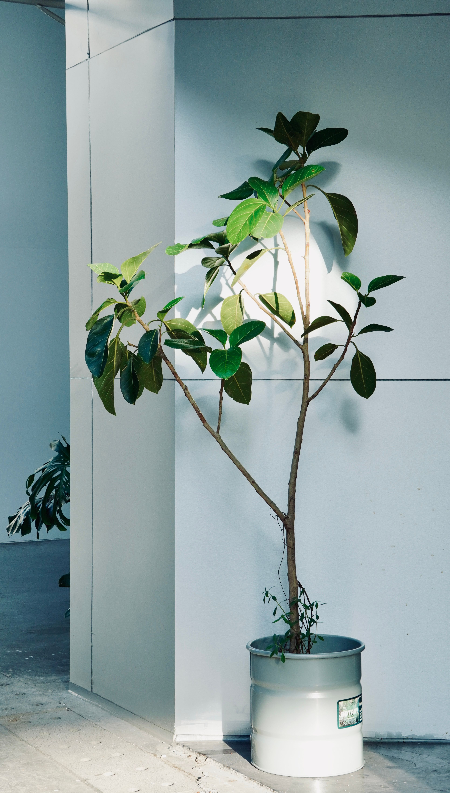
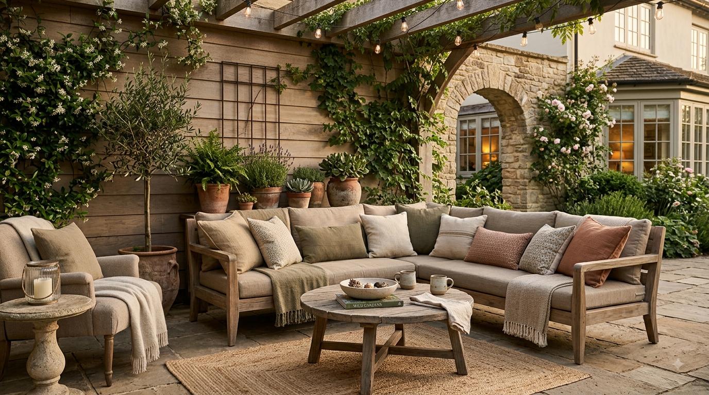

En este artículo
Introducción
Aprende a hacer compost en casa con restos adecuados, equilibrio entre materiales secos y húmedos, aireación y control de humedad.
La mejor forma de tomar decisiones acertadas es observar las condiciones reales antes de comprar o intervenir. Luz, clima, espacio, frecuencia de mantenimiento y recursos disponibles cambian por completo qué solución resulta adecuada.
En esta guía encontrarás criterios prácticos para analizar cada situación, evitar errores frecuentes y construir una rutina más sencilla. El objetivo no es seguir una fórmula rígida, sino aprender a adaptar las recomendaciones a tus plantas y a tu espacio.
Cuando una decisión afecta a varias plantas, conviene avanzar poco a poco. Probar una solución en una zona pequeña permite evaluar el resultado antes de aplicarla a todo el jardín o colección.
Qué es el compost y por qué funciona
El compostaje es un proceso biológico en el que microorganismos descomponen restos orgánicos y los transforman en un material oscuro y estable que puede utilizarse para mejorar el suelo. No es simplemente dejar residuos acumulados: necesita una combinación adecuada de materiales, oxígeno y humedad.
Los microorganismos consumen carbono y nitrógeno. Los materiales secos y marrones, como hojas secas y cartón sin recubrimientos problemáticos, aportan principalmente carbono; restos verdes de cocina y jardín aportan más nitrógeno.
Cuando existe equilibrio, la pila se calienta y los materiales comienzan a descomponerse. El proceso puede durar varios meses según tamaño, clima y manejo.
Compostar reduce parte de los residuos domésticos y produce una enmienda útil para jardines y macetas. Sin embargo, requiere aprender qué materiales son adecuados y mantener una rutina básica.
Elige el lugar y el recipiente adecuados
Un compostador puede instalarse directamente sobre el suelo del jardín o utilizar recipientes diseñados para patios y terrazas. El lugar debe ser accesible, tener cierto drenaje y permitir añadir materiales con facilidad.
Evita zonas que se inunden o reciban sol extremo todo el día. Una sombra parcial ayuda a mantener humedad estable. En climas fríos, algo de sol puede favorecer la actividad durante el invierno.
El tamaño importa. Una pila muy pequeña pierde calor rápidamente; una enorme puede ser difícil de airear. Para una familia, un recipiente doméstico de tamaño medio suele ser suficiente.
En balcones, los sistemas convencionales pueden no ser adecuados por espacio y posibles olores. Vermicompostaje o compostadores cerrados específicos ofrecen alternativas, siempre que se gestionen correctamente y respeten normas del edificio.
Qué restos puedes añadir al compost
Restos de frutas y verduras, posos de café, bolsitas de té sin materiales plásticos, hojas secas, césped en cantidades moderadas y cartón marrón troceado son materiales habituales. Corta los restos grandes para acelerar su descomposición.
Alterna materiales húmedos y secos. Si añades muchos restos de cocina, incorpora hojas o cartón para absorber humedad y mantener estructura. Una mezcla demasiado húmeda se compacta y puede generar olores.

Evita carnes, pescados, lácteos, aceites y grandes cantidades de comida cocinada en un compostador doméstico convencional, porque pueden atraer animales y producir olores. También evita excrementos de mascotas carnívoras y plantas tratadas con productos problemáticos.
Las malas hierbas con semillas maduras o plantas enfermas necesitan precaución. Un compost doméstico puede no alcanzar temperaturas suficientes para destruir semillas o patógenos.
Equilibra materiales verdes y marrones
No necesitas medir una proporción exacta con balanza. Una regla práctica es observar la textura. El compost debe sentirse húmedo como una esponja escurrida y mantener pequeños espacios de aire.
Si la mezcla está muy húmeda y compacta, añade materiales marrones secos y remueve. Si está demasiado seca y el proceso se detiene, incorpora algo de material verde y humedece ligeramente.
Evita añadir capas gruesas de césped recién cortado. Se compacta con rapidez y puede generar olor. Mezcla con hojas secas o cartón.
A medida que adquieras experiencia, reconocerás el equilibrio por olor, temperatura y apariencia. Un compost sano huele a tierra o material vegetal en descomposición, no a residuos podridos.
Airea la mezcla y controla la humedad
El oxígeno permite que trabajen microorganismos aeróbicos. Voltear la pila periódicamente mezcla materiales y evita zonas compactadas. La frecuencia depende del sistema; algunos compostadores se diseñan para girar y otros necesitan una horquilla.
No es necesario remover todos los días. Demasiada manipulación puede enfriar la pila. Una revisión cada una o dos semanas suele ser suficiente para sistemas domésticos, ajustando según olor y velocidad.
Durante periodos secos, comprueba humedad. Si la pila está polvorienta, añade agua gradualmente mientras mezclas. Durante lluvias intensas, cubre el compostador si se satura.
Los agujeros de ventilación deben permanecer libres. No compactes los materiales al añadirlos. Trocear cartón y ramas finas crea estructura y permite que circule aire.
Cómo saber cuándo el compost está listo
El compost maduro tiene color oscuro, olor a tierra y una textura relativamente uniforme. La mayoría de los materiales originales ya no son reconocibles, aunque pueden quedar pequeños trozos de ramas.
Si el compost aún está caliente o contiene muchos restos frescos, déjalo madurar. Utilizar material incompletamente descompuesto alrededor de plantas puede continuar consumiendo nitrógeno y generar condiciones inestables.
Tamizar es opcional. Puedes separar trozos grandes y devolverlos al compostador para otro ciclo. El material fino puede incorporarse al suelo, utilizarse como cobertura ligera o mezclarse en sustratos en proporciones adecuadas.
Aplica compost de forma moderada. Más no siempre es mejor. Algunas plantas necesitan suelos pobres y una aplicación excesiva puede aportar demasiados nutrientes.
Problemas frecuentes y cómo corregirlos
Si el compost huele a podrido, probablemente está demasiado húmedo o compacto. Añade cartón troceado, hojas secas u otros materiales marrones y mezcla para introducir aire. Evita añadir más restos de cocina hasta que se recupere.
Si no ocurre nada y los materiales permanecen secos, comprueba humedad. Añade agua poco a poco y mezcla. Una pila demasiado pequeña también puede tardar más porque pierde calor rápidamente.
La presencia de moscas pequeñas suele aumentar cuando los restos de comida quedan expuestos. Entiérralos bajo una capa de material seco y mantén una cobertura de hojas o cartón.
Si aparecen roedores, revisa qué estás añadiendo. Carnes, aceites y comida cocinada pueden atraerlos. Utiliza un recipiente seguro y sigue recomendaciones locales para evitar acceso.
Temperatura y fases del proceso
Después de construir una pila equilibrada, la actividad microbiana puede aumentar la temperatura. En sistemas grandes, el centro puede calentarse considerablemente. Esta fase acelera la descomposición y puede reducir algunas semillas y organismos.
No todos los compostadores domésticos alcanzan temperaturas altas. Eso no significa que el proceso haya fallado; simplemente será más lento. Por esta razón, evita añadir materiales que requieran compostaje caliente para ser seguros.
A medida que se agotan los materiales fáciles de descomponer, la temperatura baja. Entonces comienza una fase de maduración en la que otros organismos continúan transformando la mezcla.
No utilices compost inmediatamente después de que se enfríe si todavía contiene muchos restos reconocibles. Dejarlo madurar mejora estabilidad.
Vermicompostaje como alternativa para espacios pequeños
El vermicompostaje utiliza lombrices específicas para procesar restos orgánicos. Puede funcionar en patios, balcones protegidos e incluso interiores bien gestionados. Necesita un recipiente ventilado, humedad estable y temperatura moderada.
No utilices lombrices de jardín al azar. Las especies empleadas para vermicompostaje están adaptadas a vivir en materia orgánica en descomposición. Adquiérelas en proveedores apropiados.
Añade alimentos en cantidades pequeñas y cubre con material de cama. Si queda comida sin consumir durante muchos días, reduce la cantidad. Evita extremos de temperatura, exceso de agua y alimentos problemáticos.
El producto resultante es rico y se utiliza en pequeñas cantidades. También puede producirse un líquido, pero no debe confundirse automáticamente con fertilizante listo para aplicar; sigue las recomendaciones del sistema.
Cómo utilizar el compost terminado
En el jardín, extiende una capa fina sobre la superficie o incorpórala ligeramente antes de plantar. No es necesario enterrar grandes cantidades. El compost mejora estructura y aporta materia orgánica de forma gradual.
En macetas, mézclalo con otros componentes del sustrato. Utilizar solo compost puede retener demasiada humedad y aportar nutrientes en exceso. La proporción depende de la planta.

En césped, un recebo ligero de compost tamizado puede contribuir a la salud del suelo. Aplica una capa fina que no cubra las hojas.
Guarda compost maduro en un lugar protegido si no vas a usarlo inmediatamente. Evita que se empape o se seque completamente durante largos periodos.
Errores que conviene evitar al empezar
Uno de los errores más frecuentes es añadir demasiados restos de cocina y pocos materiales secos. El resultado es una masa compacta y con olor. Mantén siempre una reserva de cartón y hojas.
Otro error es esperar compost perfecto en pocas semanas. El proceso necesita tiempo. Trocear materiales y mantener equilibrio acelera, pero no elimina la fase de maduración.
No conviertas el compostador en un contenedor de cualquier residuo orgánico. Carne, lácteos, aceites, excrementos de mascotas y plantas problemáticas requieren otros sistemas.
Finalmente, evita abandonar la pila durante meses sin observarla. Una revisión cada una o dos semanas permite corregir humedad y aireación antes de que aparezcan problemas.
Una rutina semanal sencilla para principiantes
Una vez por semana, abre el compostador y observa humedad, olor y volumen. Si la superficie está muy mojada, añade un puñado de material seco. Si está demasiado seca, incorpora restos frescos y algo de agua.
Mezcla suavemente la capa superior y comprueba que no existan grandes masas compactadas. No necesitas voltear todo el contenido cada vez. El objetivo es mantener algo de aire y distribuir nuevos materiales.
Trocea cartón y hojas antes de guardarlos cerca del compostador. Tener una reserva seca disponible hace mucho más fácil equilibrar cada aporte de cocina.
Lleva una lista breve de lo que funciona. Si una semana aparecen olores o insectos, anota qué añadiste. Con pocas semanas de práctica aprenderás a reconocer el equilibrio del sistema.
Cómo organizar los restos de cocina antes de llevarlos al compost
Coloca un recipiente pequeño y fácil de lavar cerca de la zona donde preparas alimentos. Vacíalo con frecuencia para evitar olores y moscas. No necesitas un cubo enorme: recoger cantidades pequeñas y llevarlas regularmente al compostador suele ser más higiénico.
Trocea cáscaras y restos vegetales grandes antes de añadirlos. Esto aumenta la superficie disponible para los microorganismos y acelera la descomposición. Mezcla cada aporte húmedo con material seco para mantener estructura.
Si no puedes vaciar el recipiente todos los días, guárdalo cerrado y en un lugar fresco. Algunas personas congelan temporalmente restos para evitar olores, especialmente en viviendas pequeñas. Elige la rutina que puedas mantener de forma constante.
Preguntas frecuentes
¿Cuánto tarda en hacerse el compost?
Normalmente varios meses. El tiempo depende de temperatura, tamaño de los restos, aireación, humedad y frecuencia de manejo.
¿Por qué mi compost huele mal?
Suele indicar exceso de humedad, compactación o demasiados materiales verdes. Añade materiales secos y airea la mezcla.
¿Puedo compostar cáscaras de cítricos?
Sí, en cantidades moderadas y troceadas. Como con otros restos, conviene mezclarlas con materiales diversos.
¿Se pueden añadir malas hierbas?
Sí, pero evita especies con semillas maduras o plantas invasoras problemáticas si tu compost no alcanza temperaturas altas.
¿Puedo usar compost en macetas?
Sí, normalmente mezclado con otros componentes del sustrato. Evita llenar una maceta únicamente con compost puro.
Conclusión
Cómo hacer compost en casa: guía sencilla para principiantes requiere observar, comparar y adaptar los cuidados a las condiciones reales. No existe una solución universal que funcione igual en todos los jardines o viviendas.
La constancia suele ser más útil que realizar cambios intensos de forma ocasional. Revisar las plantas, registrar resultados y ajustar pequeñas decisiones permite mejorar progresivamente.
También es importante respetar límites de seguridad y las instrucciones de productos, herramientas o instalaciones. Cuando una tarea supera el mantenimiento básico, recurrir a un profesional puede evitar riesgos y daños.
En definitiva, un buen resultado se construye combinando información, observación y experiencia. Cuanto mejor conozcas tu espacio, más fácil será tomar decisiones sostenibles y mantenerlas a largo plazo.